Tomberlin golf carts at Golf Carts of Texas
Tomberlin golf carts are available at Golf Carts of Texas. Call us to see what's on the lot.
Tomberlin, Star EV, NIU EV, Solana, Bintelli, ActivEV and Aries EV.
Golf Carts of Texas sells new carts from Tomberlin, Star EV, NIU EV, Solana, Bintelli, ActivEV and Aries EV. Availability, colors and pricing change often — call or stop by to see what's on the lot. Every new cart comes with a bumper-to-bumper warranty.


Tomberlin golf carts are available at Golf Carts of Texas. Call us to see what's on the lot.
More Tomberlin carts available at Golf Carts of Texas. Call us to take a look.
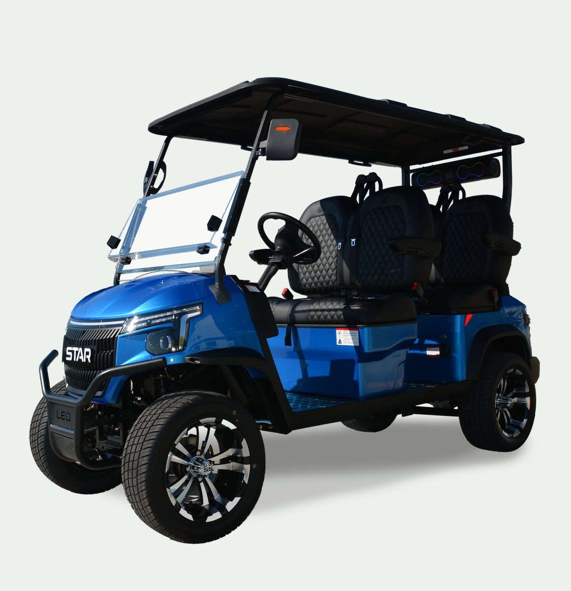


Star EV is now at Golf Carts of Texas, including the Sirius and other models. Come in for a test drive.
NIU is here, and we still take trade-ins. Tired of your old golf cart? Call us about a new one.
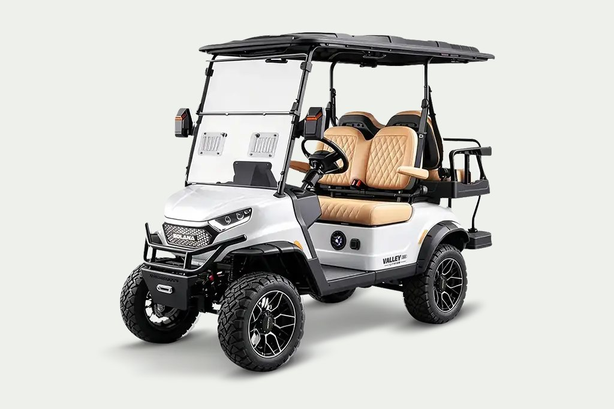


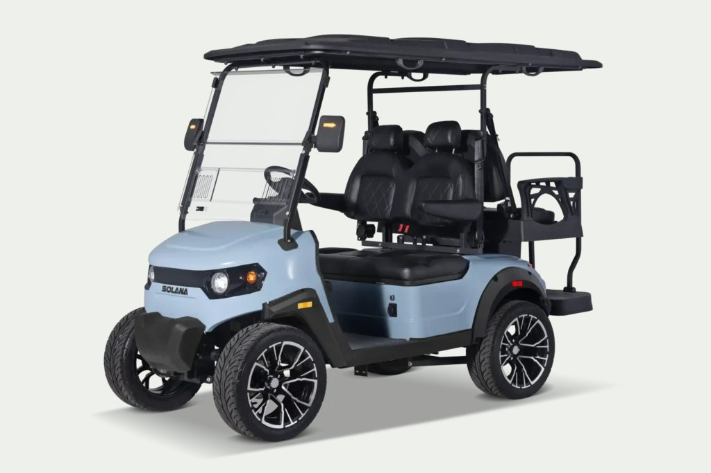


Full current Bintelli lineup. Call for what's in stock.

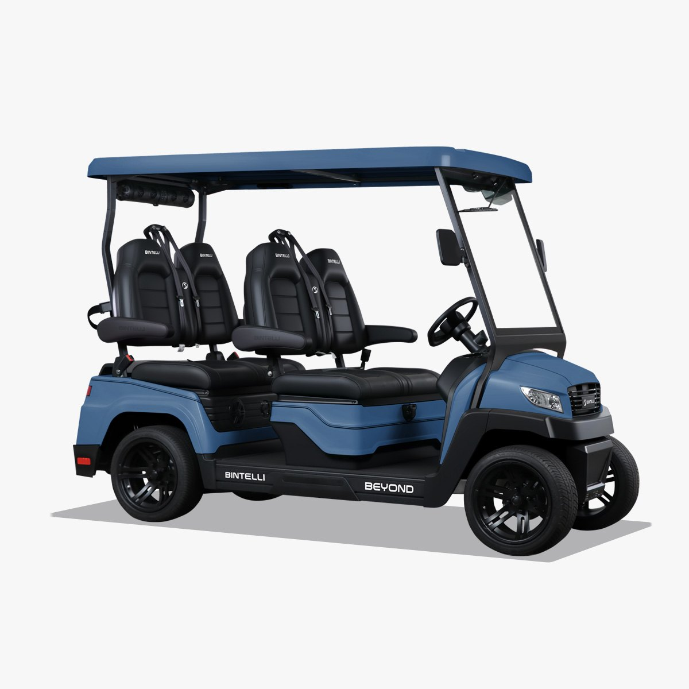
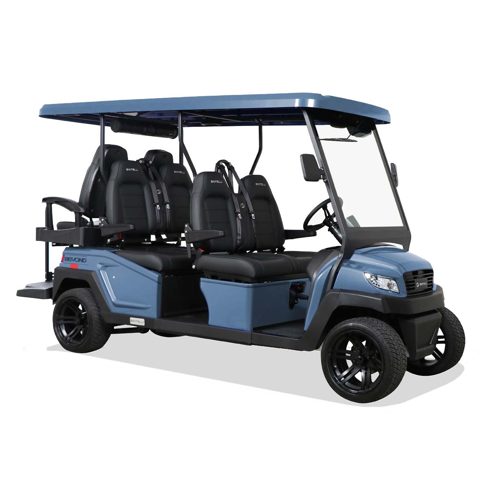
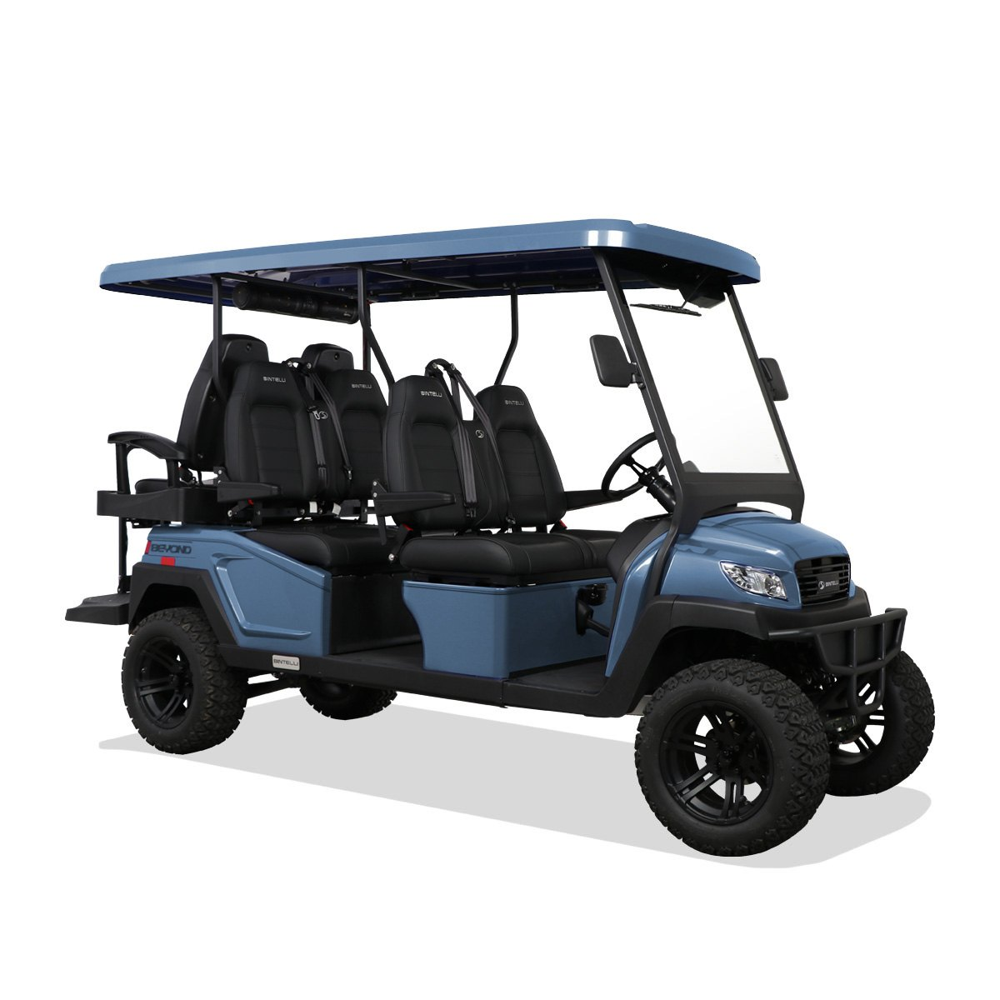


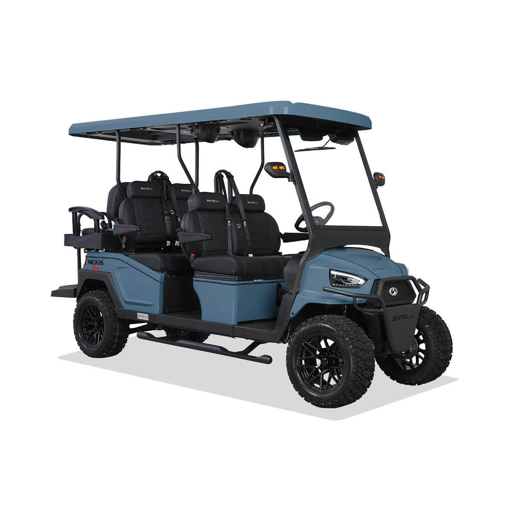
Bintelli carts available in your area today. Pick up and delivery, and trade-ins welcome. Call Galveston at 409-256-7717.
Bintelli carts available in your area today. Pick up and delivery, and trade-ins welcome. Call Galveston at 409-256-7717.
Full current ActivEV lineup. Call for what's in stock.

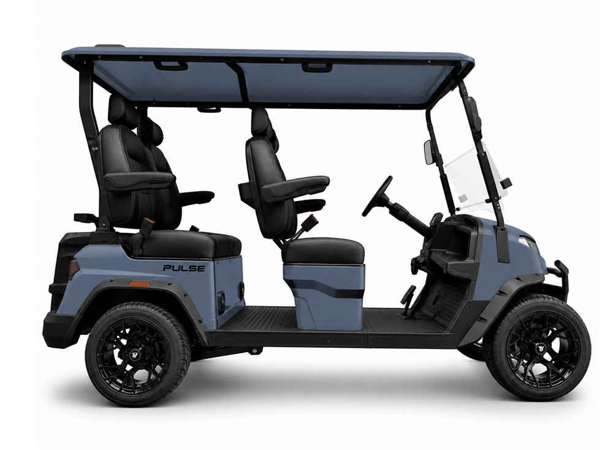


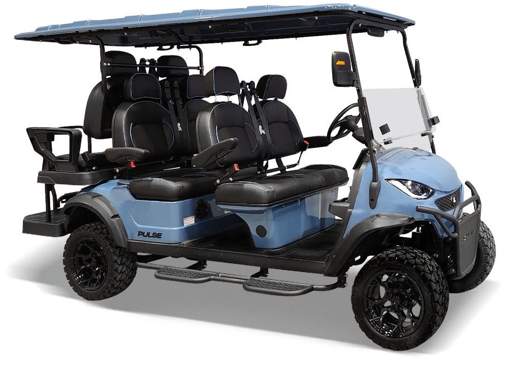
ActivEV carts are available at Golf Carts of Texas. Come see what ActivEV has to offer.
Full current Aries EV lineup. Call for what's in stock.

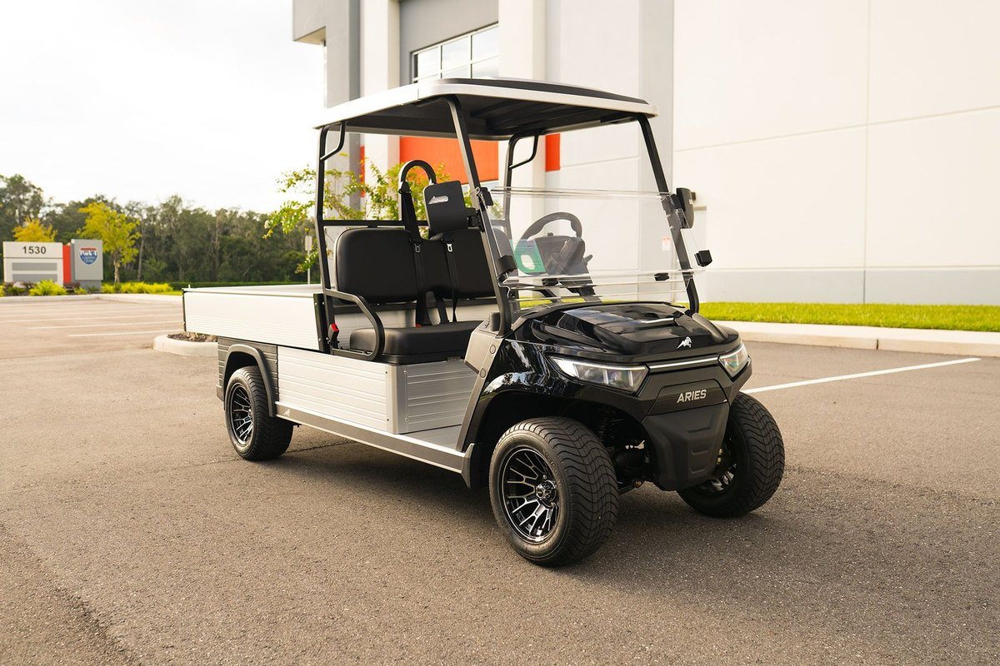


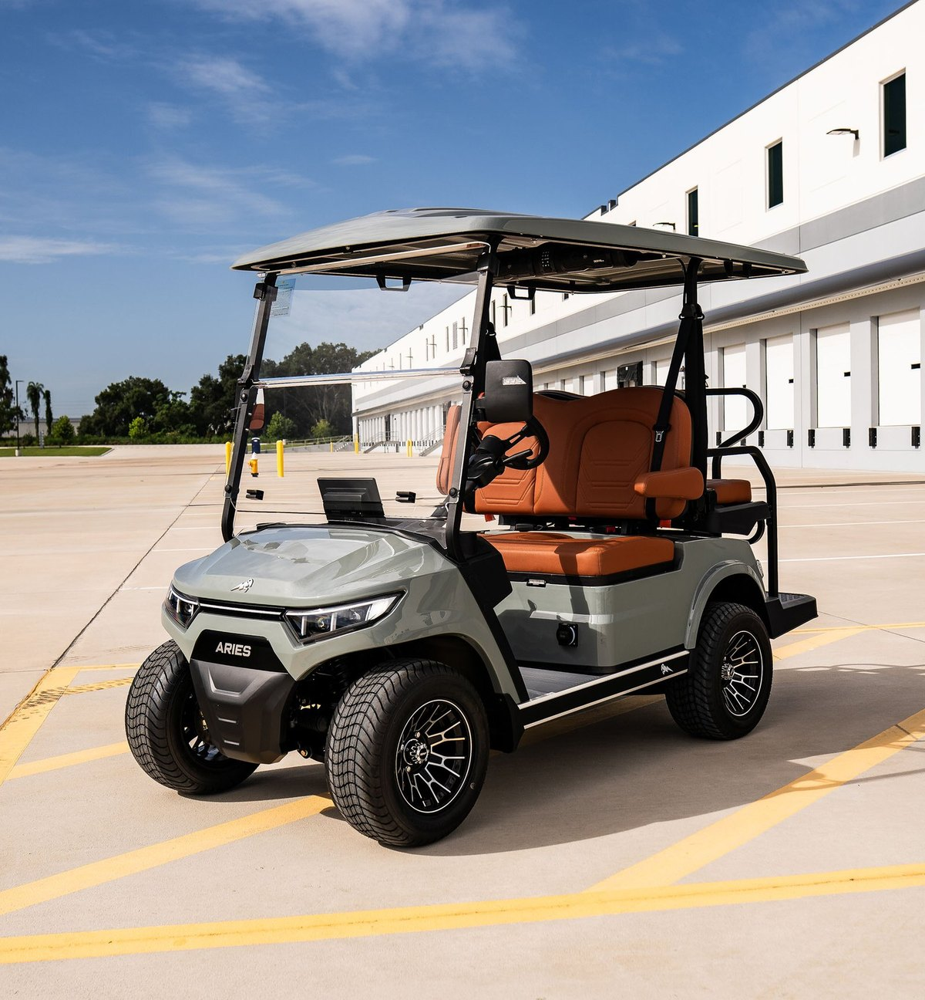


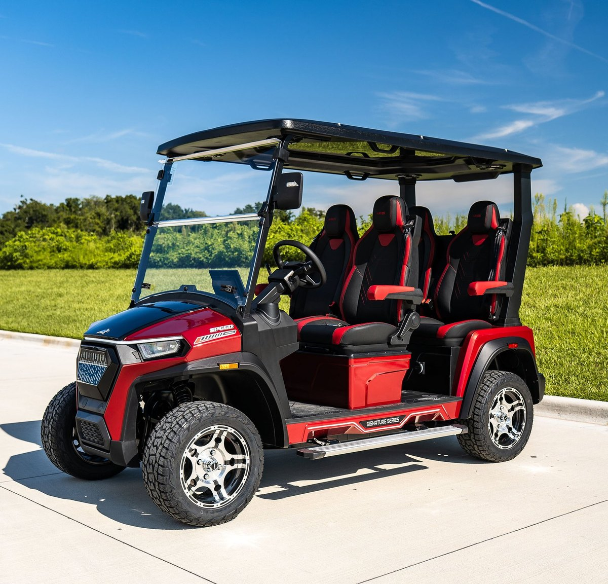


We also customize and service Club Car, E-Z-GO and Yamaha carts. Tell us what you're looking for and we'll bring the expertise to meet your specifications.
Off the course, on rough terrain or around the ranch, any of these carts can be transformed with lift kits, windshields and brush guards, mirrors, covers, enclosures and more.
Bring us your ideas. We'll make it happen.